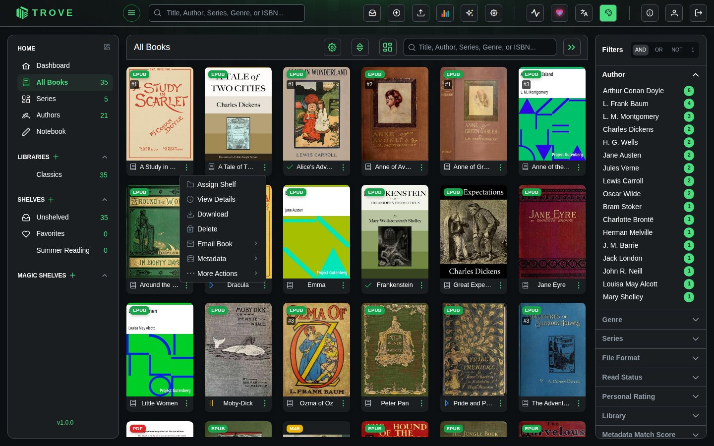
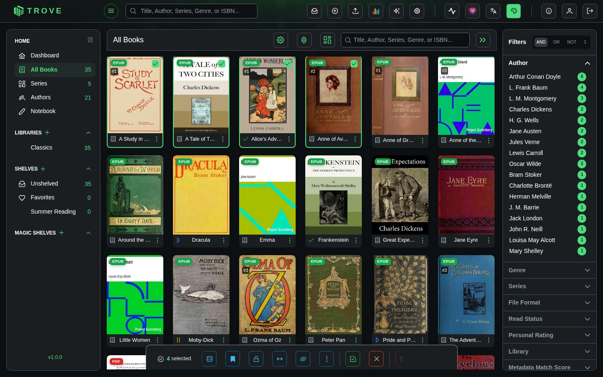
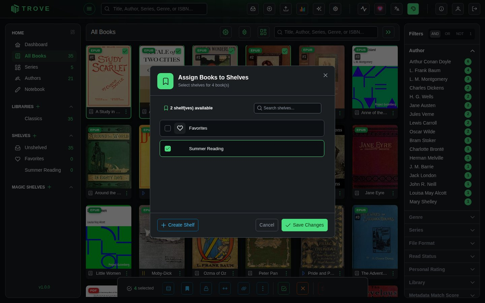
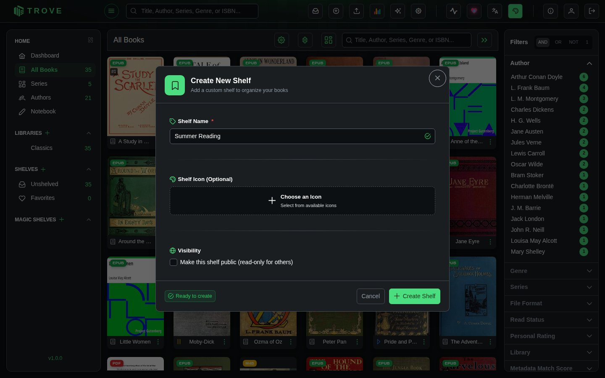
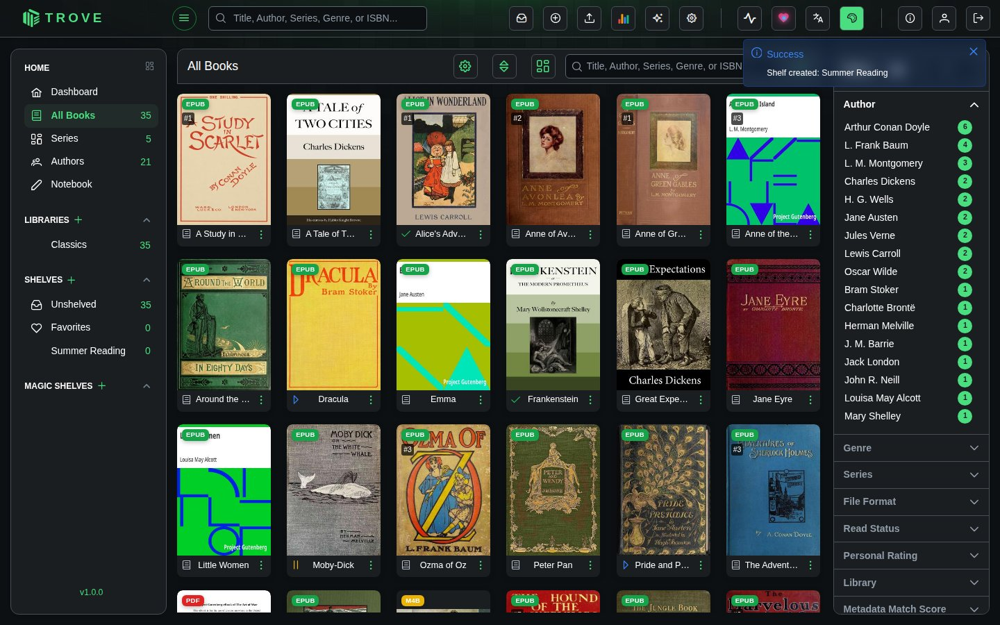
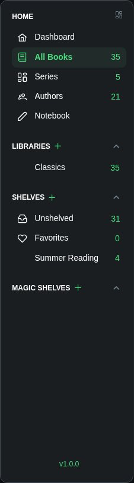

Shelves
Shelves let you organize books across libraries by theme, purpose, or preference. A book can belong to multiple shelves, and shelves can contain books from different libraries.
Everyone starts with a Favorites shelf, and Unshelved lists the books that aren't on any shelf. If you use Kobo sync, a Kobo shelf holds the books to send to your Kobo (see Kobo). Shelves are your own: other users don't see them unless an admin makes one public.
Putting books on shelves
From a Single Book
Click the three-dot menu on any book card and select Assign Shelf.

From Multiple Books
Hover over a book card and check the checkbox to select it. A bottom action bar appears. Select more books, then click the Assign Shelf button in the action bar.

The Assign Shelf Dialog
After using either method, the Assign Books to Shelves dialog opens. Tick the shelves the books should be on (and untick ones they shouldn't), or click Create Shelf to make a new one, then Save Changes.

Creating a shelf
Click the + beside Shelves in the sidebar, or Create Shelf in the assign dialog. Give the shelf a name, optionally an icon, and click Create Shelf.
Admins also see Make this shelf public: a public shelf appears in every user's sidebar, marked read-only for everyone but its owner. It's a way to share a reading list with the household.

The new shelf appears in the sidebar, and a message confirms it was created.

Viewing Shelves
All shelves appear in the left sidebar under the Shelves section. Click any shelf to browse its contents.

When viewing a shelf, the bottom action bar includes Remove from this shelf for the selected books. The ⋮ beside the shelf's name has Edit Shelf (name, icon, public or not) and Delete Shelf; deleting a shelf doesn't delete its books.